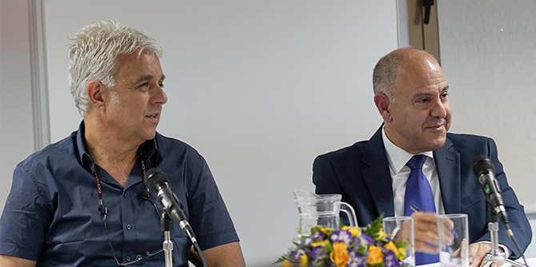

At a meeting with fellows of the Mandel School for Educational Leadership on July 3, 2017, Shmuel Abuav, the director general of Israel’s Ministry of Education, described the questions guiding his ministry’s vision. “When we develop the strategic plan for the Ministry of Education, we ask ourselves the key question, ‘What does a successful graduate look like?’ What will those people who have completed the educational journey from kindergarten to 12th grade take with them when they leave?”
His response was that graduates of the education system should have acquired the following:
- Relevant knowledge that transcends fleeting trends
- Cognitive skills – thinking and analysis capabilities
- Emotional skills – curiosity, tenacity, and the ability to cope with different situations
- Values, which are transmitted in all the main subjects studied at school.
“The mission of the education system is to reduce gaps,” he said. “This is a remarkable system in terms of its capacity for creating change, in all aspects – educational, social, and ethical. There is great recognition among the teachers that this is an immense calling. The opportunity for creating real change is great, and this is the arena for change. This is where it happens.”
After Abuav’s presentation, there was a discussion in which a variety of issues were raised, including: trends in the Arab education system; dealing with dropout rates in the Haredi education system; music education in Israel; vocational technology education; environmental management and sustainability in the education system; the development of management personnel; and more.

{kind=link}